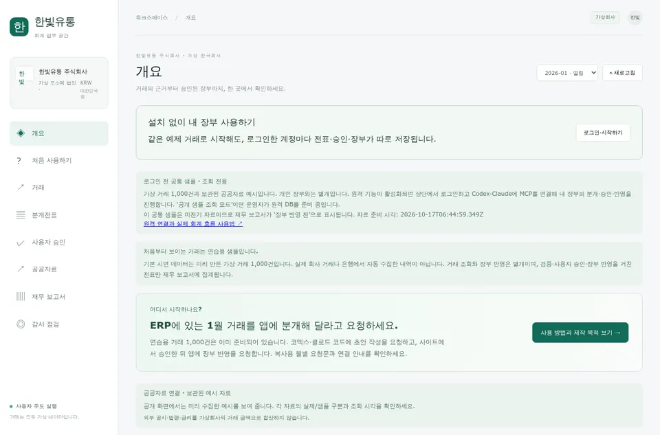

회계·세무 자격
재경관리사, 전산회계 1급, 전산세무 2급을 취득했습니다. 전체 자격·어학 보기
회계세무 전공
일본어 복수전공
회계세무를 전공하고 일본어를 복수전공하는 김상혁입니다.
대학 강의를 복습하려고 재무관리 개념 노트와 문제집을 만들었습니다. 어머니의 중개사무소에서는 손님에게 조건에 맞는 집을 소개할 수 있도록 향남 매물 검색 사이트를 만들었습니다.
재경관리사, 전산회계 1급, 전산세무 2급을 취득했습니다. 전체 자격·어학 보기
중간고사를 준비하며 시험 범위인 3~9장의 내용을 두 사이트로 정리했습니다. 개념 노트에서는 연금의 첫 지급일에 따라 현재가치가 어떻게 달라지는지 설명합니다. 문제집에는 강의 예제와 기출문제 등 95문항을 담아 유형별로 풀고 복습할 수 있게 했습니다.
두 학습 사이트를 열려면 Claude에 로그인해야 합니다.
분개가 장부와 재무제표에 어떻게 반영되는지 실습하려고 가상회사 한빛유통의 회계 학습실을 만들었습니다. 학습자는 매출 증빙을 읽고 전표를 검토한 뒤, 승인한 전표가 원장에 어떻게 반영됐는지 확인합니다.
AI 앱과 회계 엔진을 MCP로 연결했습니다. 앱에서 매출 거래를 선택하면 엔진이 세금계산서와 인도 기록을 대조해 전표 초안을 만듭니다. 이때 출고 수량과 단위원가로 매출원가도 함께 계산합니다.
엔진이 차변과 대변의 합계, 증빙을 확인하면 학습자가 전표를 승인하거나 반려합니다. 원장에는 승인 당시와 내용이 일치하는 전표만 반영합니다.
한빛유통을 만든 과정 읽기
어머니의 중개사무소 일을 도우며 공개 매물을 거래 유형과 매물 종류로 찾는 홈페이지를 만들었습니다. 상담 중에는 손님에게 조건이 담긴 링크를 건네 매물 목록을 함께 볼 수 있습니다.

사무소 전용 도메인을 Cloudflare Workers에 연결했습니다. 거래 유형과 매물 종류는 검색 주소에 저장합니다. Astro는 주소에서 조건을 읽어 Supabase에 등록된 공개 매물만 조회합니다.
같은 링크를 나중에 열어도 검색 조건은 유지됩니다. 결과에는 조회 시점의 매물이 표시됩니다. 가격 범위는 매매의 경우 매매가, 전세·월세의 경우 보증금을 기준으로 적용합니다.
전세 아파트로 검색해 보기일본어 공부를 하며 급수별 어휘를 복습할 수 있는 단어장을 만들었습니다. 공부하면서 모르는 단어에 표시를 남기면 그 단어만 모아 다시 볼 수 있습니다. 학습 위치를 저장해 다음에 같은 자리에서 이어갑니다.

AI 에이전트들이 서로의 제안을 검토하는 절차를 설계했습니다. 각자 근거와 반례를 제시하고, 합의한 결론을 작업 문서에 남깁니다. 최종 보고는 한 에이전트가 맡습니다.
거래처명 대조 도구를 검토할 때는 철자가 비슷한 이름을 어디까지 같은 거래처로 볼지가 쟁점이었습니다. 도구는 확인할 후보를 추리고, 실제로 같은 거래처인지는 담당자가 판단하도록 기준을 정했습니다.
월요일 08:00
국내 유급 인턴 중 회계·재무 직무와 일본어를 활용하는 직무를 매주 찾아보는 작업을 자동화했습니다. 공고별 근무지와 지원 요건, 마감일을 한눈에 비교하고 지원할 곳을 고릅니다.
회계세무학 전공, 일어일문학 복수전공입니다. 회계 프로젝트에서는 증빙 검토와 지급 심사를 다뤘습니다. 가족이 운영하는 중개사무소에서는 매물 검색 사이트를 만들고 상담 녹음을 일지로 정리하는 업무를 자동화했습니다.
일어일문학과 복수전공
누적 평점 4.3/4.5 (2026년 10월 기준)
신선식품 매장에서 상품 진열과 재고 관리를 담당했습니다.
매물 검색 사이트를 만들고 상담 녹음을 전사·요약해 Notion 상담일지에 저장하도록 연결했습니다. 11월 9일에는 향남 3개 단지의 광고 291건을 조사해 신규 광고와 가격 변동을 PDF·엑셀로 정리했습니다.
가상 도매회사의 거래 증빙을 MCP로 조회하고, 전표 초안을 검토·승인해 원장에 반영하는 분개 실습을 구현했습니다.
가상 대리점 50곳의 정산 자료 240건을 분석했습니다. 관련 거래처 3곳의 월 지급액을 합산해 6개월 연속 전결 한도 200만 원을 초과한 사실을 확인했습니다. 합산액에 따라 승인권자를 정하고, 지급 자금이 부족하면 조달안을 담당 부서에 배정하는 모의 업무 앱을 구현했습니다.
재무관리 문제를 유형별로 다시 풀 수 있게 구성했습니다. 일본어 단어장은 급수별 학습과 모르는 단어 복습을 지원합니다.
에이전트 간 교차 검토, 결정 사항 기록, 대표 보고 절차를 설계했습니다. 거래처명 대조 도구의 적용 범위를 정할 때 이 절차를 사용했습니다.
연구개발비의 자산 인식 등 회계처리 사례를 주제로 토론 도구를 만들었습니다. 같은 사례에 대한 AI 에이전트 네 개의 판단 근거와 반론을 비교할 수 있습니다.
일본어 원문과 한국어 초벌 번역을 대조해 표현을 다듬고, 수정 전후의 문장과 선택 근거를 팀 발표 자료로 정리했습니다.
서울 명동에서 일본인 관광객 세 명을 일본어로 인터뷰하고, 질문별 답변을 보고서로 정리했습니다.
부원들의 관심사를 조사해 무역·주식·재무관리 주제로 활동 계획을 세웠습니다.